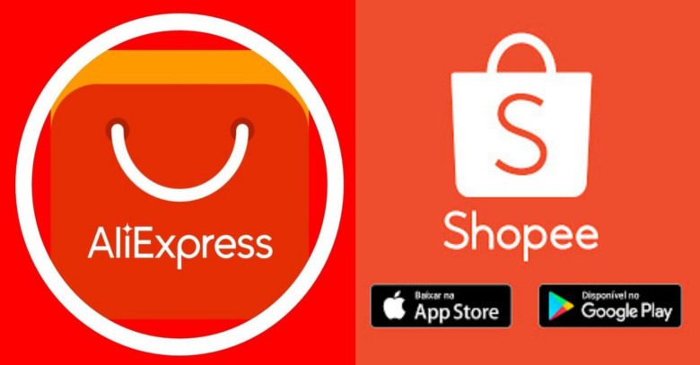

Hackers russos atacam sites do governo da Itália
Um ataque cibernético de hackers russos atingiu diversos sites da Itália, incluindo os portais do Ministério da Defesa, do Instituto Superior de Saúde (ISS) e do Senado italiano
Ver matéria completaCampanha maliciosa no WordPress redireciona usuários para sites falsos
Pesquisadores de cibersegurança da Sucuri, empresa que oferece serviços de proteção digital para sites, identificaram uma campanha direcionada que injeta códigos maliciosos de JavaScript em sites vulneráveis do WordPress.
Ver matéria completaComo ganhar dinheiro na internet: dicas para criar um site em 5 minutos
As atuais ferramentas de criação e gerenciamento de sites prezam pela autonomia, possibilitando que qualquer pessoa, mesmo com pouca experiência em informática, tenha condições de criar um site em 5 minutos.
Ver matéria completaQuais os melhores sites de apostas esportivas no Brasil?
Os sites de apostas esportivas estão cada vez mais populares no Brasil. Segundo o Grand View Research, o mercado de apostas esportivas cresce, em média, 10,1% ao ano. Até 2028, o mercado global desse segmento poderá chegar a 140 bilhões de dólares.
Ver matéria completaCinco sites para comprar carros novos e usados pela Internet
Sites para comprar carros podem facilitar a vida de quem busca adquirir veículos novos ou usados, plataformas como OLX e iCarros permitem pesquisar ofertas entre anúncios de vendedores.
Ver matéria completa
DuckDuckGo não estava exibindo sites de pirataria nos resultados
O DuckDuckGo bloqueou os sites de pirataria nos resultados de pesquisas feitas na plataforma? O sumiço de páginas como The Pirate Bay e Fmovies ao realizar buscas no concorrente do Google levantou a suspeita de que o mecanismo havia removido tais serviços.
Ver matéria completa

Shopee, AliExpress e mais: vai ficar mais caro comprar nesses sites? Entenda
Empresários insatisfeitos com a concorrência que consideram “desleal” pressionam o governo para taxar sites estrangeiros, como Shopee, AliExpress, Wish e Shein.
Ver matéria completaSites para baixar vídeos do YouTube: 5 melhores opções
Hoje existem inúmeros sites para baixar vídeos do YouTube, mas nem todos eles são completos o suficiente para te permitir baixar com qualidade e velocidade necessária. Para facilitar, separamos os melhores sites e ferramentas com essa funcionalidade.
Ver matéria completaPesquisa mostra diferença de até 50% em preços de perfume em sites; veja orientações do Procon
Levantamento foi feito em cinco grandes sites de compras e mostra a importância de fazer pesquisas antes de fechar uma compra.
Ver matéria completa5 sites para fazer currículo online
Se você está procurando um novo emprego, sites para fazer currículo podem te ajudar. Ainda que esse elemento seja subestimado por muitos candidatos, ele exerce um papel essencial para o avaliador.
Ver matéria completaNovo presidente diz que Anatel não tem competência legal para bloquear sites e aplicativos
Há 1 semCarlos Baigorri argumentou que a sociedade quer da Anatel soluções sobre a internet, mas, segundo ele, agência dispõe de mecanismos de atuação elaborados 'no século passado'.
Fonte: G1A China aumenta censura de sites e aplicativos cristãos
Há 2 diasNovas regulamentações da internet, que entraram em vigor em 1º de março, começam a surtir efeito. Um conhecido site cristão chinês foi forçado a fechar após a implementação de novos regulamentos da Internet no início deste ano.
Fonte: ComunhãoComo calcular rescisão trabalhista com FGTS? Veja 5 sites que fazem o cálculo
Há 3 semFerramentas online gratuitas permitem calcular quanto funcionário irá receber ao pedir demissão ou ser demitido; conheça calculadoras de rescisão com FGTS.
Fonte: Techtudo